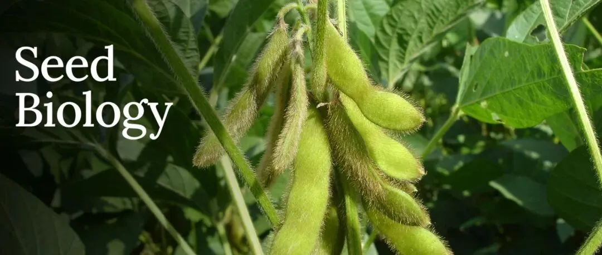
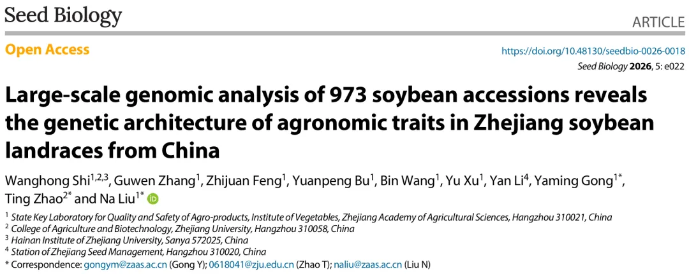
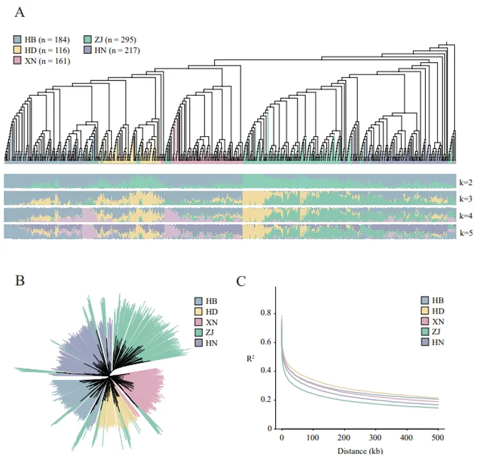
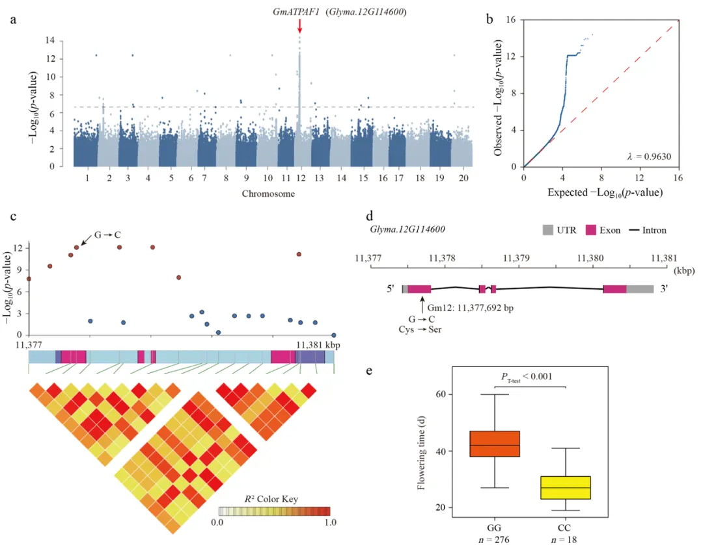

Seed Biology | 浙江省农科院联合浙江大学解析浙江地方大豆的农艺性状遗传基础
原文：https://mp.weixin.qq.com/s?__biz=MzAwMzIzOTk5OQ==&mid=2247541665&idx=3&sn=a774b3856e7e9e172a43db4b6c536e16&chksm=9b3c5af1ac4bd3e770603ad9b1359889ffbe4a48fecb81e3ed4569e2bc3565690f0793600bfd#rd 合集：文献速递
当前期刊如需催审稿可联系[Biomamba_zhushou]


大豆（Glycine max）起源于中国，是食用油、植物蛋白和饲料的重要来源。我国大豆资源丰富，但国内需求逾80%依赖进口，近五十年产量增长有限，育种突破亟需阐明关键性状的遗传机制。GWAS是解析复杂性状遗传变异的有力工具，过去大豆中已报道了上千个QTL关联位点。浙江地处长江流域下游，地貌气候多样、大豆栽培历史悠久，是高蛋白大豆与菜用大豆优势产区，地方种质遗传多样性丰富、蕴藏大量优异等位基因。为此，本研究以浙江地方大豆种质为核心材料，挖掘农艺性状关联位点与潜在候选基因。 2026年8月，Seed Biology 在线发表了浙江省农科院团队与浙江大学农学院种业所团队题为Large-scale genomic analysis of 973 soybean accessions reveals the genetic architecture of agronomic traits in Zhejiang soybean landraces from China的研究论文。研究以295份浙江地方大豆种质为核心材料，对28个农艺性状开展表型精准鉴定，结合678份中国其他地区的大豆材料进行大规模群体结构分析，通过GWAS与单倍型分析挖掘农艺性状关联位点与潜在候选基因。 群体结构分析将973份大豆种质清晰划分为5个亚群，类群划分与地理来源高度一致，表明该群体涵盖了较广的遗传分化层次。其中，浙江分群具有较高的遗传多样性（π = 1.39×10-3），连锁不平衡（LD）衰减速度快，遗传资源丰富，为后续关联定位提供了合理的群体框架。

图1 973份大豆种质的群体结构，系统发育和遗传分析 在此基础上，研究对295份浙江地方种质进行了为期两年的田间表型精准鉴定，调查了28个农艺性状，并开展全基因组关联分析，共检测到81个显著关联信号。其中包括已有报道控制子叶颜色的D1，D2 基因，以及新鉴定到的开花期潜在调控基因GmATPAF1，耐盐胁迫潜在调控基因GmLRR1 等，为大豆分子遗传育种提供了重要资源。
图2 开花时间的GWAS分析结果浙江省农科院刘娜研究员、龚亚明研究员，浙江大学农学院赵汀特聘研究员为该文通讯作者，浙江大学施王鸿硕士生为第一作者。
原文链接：
https://doi.org/10.48130/seedbio-0026-0018
PDF下载： seedbio-0026-0018.pdf
特邀作者：刘娜编辑：顾笑寅 审核：李 悦
相关推荐：
Seed Biology 综述 | 山东农大张大健教授团队综述大豆种子性状驯化基因的研究进展
Seed Biology | 全基因组关联分析揭示GmJAZ8参与调控大豆种子萌发
Seed Biology |《种子生物学》2025年文章目录
关于 Seed Biology
《种子生物学》（ Seed Biology ） 是一本开放获取的英文学术期刊，致力于传播种子生物学的相关研究成果，专注于发表本领域原创研究论文、综述、展望和观点。刊载范围包括但不限于采用组学、遗传学、生物技术和基因组编辑、细胞和分子生物学、生理学和环境生物学等前沿技术和方法，对种子进化、种子形成过程，如孢子发生和配子发生、授粉和受精、无融合生殖和人工种子、种子产量调控、胚乳和子叶及种皮中营养和健康相关的品质、种子休眠和萌发、种子与环境和其它微生物相互作用、种子在果实发育中的作用等进行的研究。期刊主编由 中国科学院院士、崖州湾国家实验室杨维才研究员担任。2022年入选中国科技期刊卓越行动计划高起点新刊项目。目前期刊已被ESCI、Scopus、CABI等数据库收录。科睿唯安JCR2025影响因子：5.3，位于植物科学一区。 期刊官网 ：https://www.maxapress.com/seedbio投稿网址 ：https://mc03.manuscriptcentral.com/seedbio
关注植物科学研究
植物科学研究 公众号专注于发布植物领域（重点为种子生物学、热带植物等）的最新研究进展，点击下方名片关注*植物科学研究 ！*
** **
点击 “阅读原文”查看文章原文